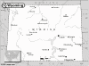

Wyoming

Attention: If you use this or any of the AIRS lists in any state, please report any bad phone numbers or emails to the webmaster. This is the responsibility of all users, including you. Thank you!
Bob Vaughn
bocitori@cowboystate.net
CROSSROADS:NW WYOMING
CODY, 82414
PHONE:1-307-587-6939
BUSES:78 WESTY
COMMENTS:
I HAVE BEEN DRIVIN VW'S IN ONE FORM OR ANOTHER SINCE 1972+- AND AM WILLIN TO BE OF SOME
HELP HERE IN THE MIDDLE OF NOWHERE.
AVAILABLE:MON-FRI EVENINGS AND MOST DAYS ON WEEKENDS
familiar with:1300,1500,1600,dual carbs, fuel injection type4 engine
I CAN PROVIDE THE FOLLOWING SERVICES:
INTERNET ACCESS
TOOLS
TELEPHONE ACCESS
MECHANICAL HELP
SPACE TO WORK ON BUS
STORAGE SPACE
COFFEE/TALK
Favorite beer type:Beer is for wimps!
chris Duvall
(vwguys@webtv.com)
CROSSROADS: 1-90 and 585
sundance, 82729
PHONE: 307-283-1651
VW'S: 1960 single cab 1965 camper 2 1966 bugs 1972 super
AVAILABLE: most any time
familiar with: 1200, 1300, 1500, 1600, 1776+
I CAN PROVIDE THE FOLLOWING SERVICES:
INTERNET ACCESS
TOOLS
TELEPHONE ACCESS
TRANSPORTATION HELP
MECHANICAL HELP
SPACE TO WORK ON BUS
STORAGE SPACE
PARTS AVAILABLE
COFFEE/TALK
CAMPING SPOT: 4 nights or more
SPARE ROOM: MOVE IN!!! :)
Favorite beer type: Anything cold
Dean Johnson
(dpjx1@uswest.net)
CROSSROADS: I-25 & I-80
Cheyenne, 82001
PHONE: 307-638-0261
VW'S: 78 Westy, 81 diesel PU, 88 Porsche Carrera Targa
COMMENTS: Suffer from auto-schizophrenia...left lane/right lane split.
Don't have room for camping, but can give directions to good, cheap locations.
AVAILABLE: call between 8am - 8pm leave message
familiar with: 1500, 1600, 1776+, fuel injection, type4 engine
I CAN PROVIDE THE FOLLOWING SERVICES:
INTERNET ACCESS
TOOLS
TELEPHONE ACCESS
TRANSPORTATION HELP
MECHANICAL HELP
Jeff Thurlow
(kismet4me99@yahoo.com)
CROSSROADS: colorado/wyoming
VW'S: 73 sunroof transporter
COMMENTS: Im going to be in northern Colorado and parts of Wyoming for the rest of 2001
and probably in Arizona for the winter.
AVAILABLE: any time ...e-mail only
familiar with: 1600, 1776+, dual carbs, type4 engine
I CAN PROVIDE THE FOLLOWING SERVICES:
TOOLS
TRANSPORTATION HELP
MECHANICAL HELP
SPACE TO WORK ON BUS
COFFEE/TALK
CAMPING SPOT: 4 nights or more
Lannie & Chrissy
EMAIL: chrissy80524_at_yahoo_dot_com
CROSSROADS: I25 & I80
CITY: Cheyenne, 82001
PHONE: 307-221-1970
VW'S: 1980 VW Campmobile
COMMENTS: I can drive a VW..and camp in it.. but that's about it,
mechanically we're still learning.
AVAILABLE: 24/7
I CAN PROVIDE THE FOLLOWING SERVICES
INTERNET ACCESS
TOOLS
TELEPHONE ACCESS
TRANSPORTATION HELP
CAMPING: 2 nights
SPARE ROOM: 2 nights
Favorite beer type: Anything cold
walker
EMAIL: walkerburton81_at_yahoo_dot_com
CITY: sheridan
ZIP CODE: 82801
ONLY CALL IF EMERGENCY PHONE: 307-751-3664
VW'S: 1967bus,1972bug,1981bus
I am familiar with: 1200, 1300, 1500, 1600, fuel injection
I CAN PROVIDE THE FOLLOWING SERVICES
MECHANICAL HELP
CAMPING: none
SPARE ROOM: 1 night
Favorite beer type: I don't drink
ben beasley
EMAIL: bbeasley_at_mix_dot_wvu_dot_edu
CROSSROADS: middle of nowhere
CITY: cody, 82414
ONLY CALL IF EMERGENCY PHONE: 3072723892
VW'S: 1978 type 2
I am familiar with: fuel injection, wasserboxer
I CAN PROVIDE THE FOLLOWING SERVICES:
TOOLS
TELEPHONE ACCESS
MECHANICAL HELP
CAMPING: none
SPARE ROOM: none
Favorite beer type: Anything cold
{kind=link}